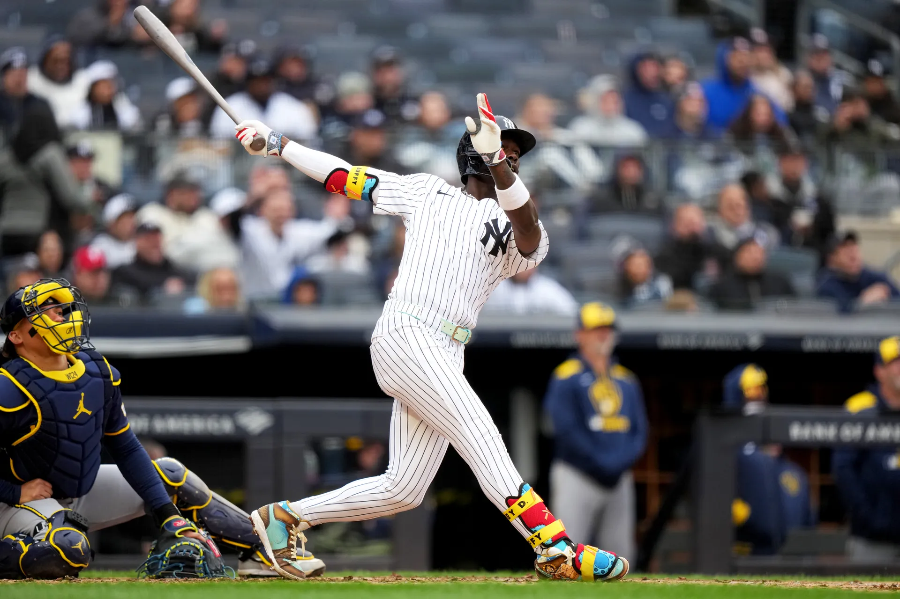

Bringing the Boom: Analyzing the Long-Term Effects of Torpedo Bat Usage
At the beginning of the 2025 MLB season, the New York Yankees scored thirty-six runs and hit fifteen home runs in three games against the Milwaukee Brewers, tying both the MLB record for most home runs in a team’s first…